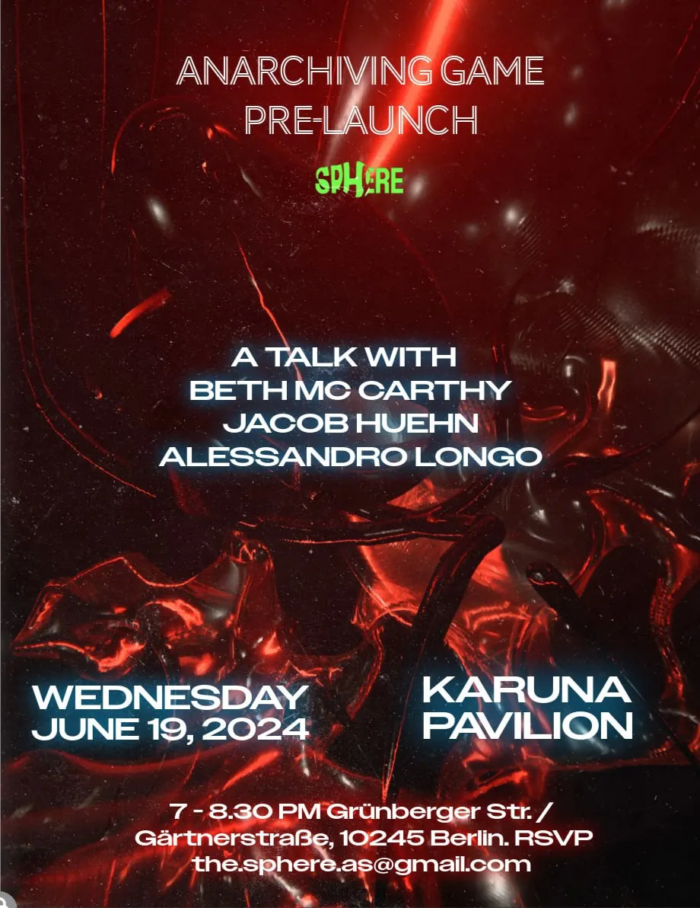
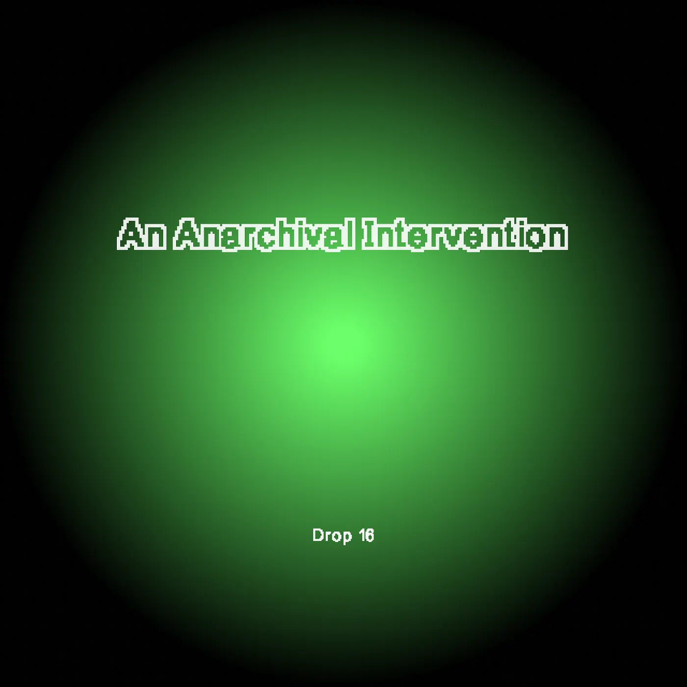
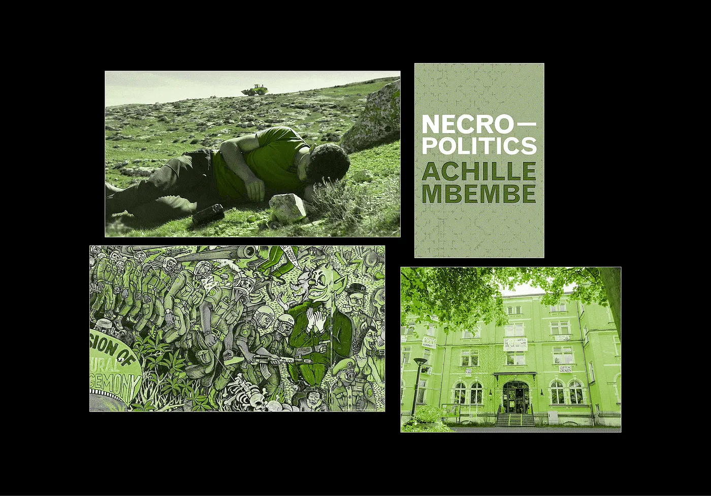
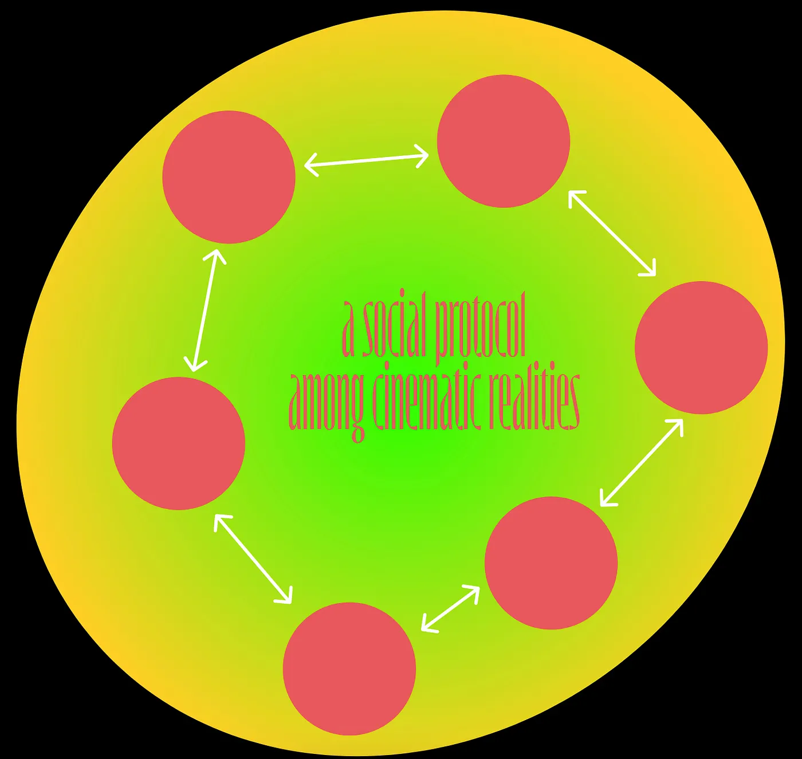

Drop #16 · July 4, 2024 · 7 min read
What makes art worth living
Hey everyone (▰˘◡˘▰)
Welcome back to Drops, REINCANTAMENTO’s newsletter. Today we share the transcript of Alessandro’s intervention at The Sphere’s pre-launch event for the Anarchiving Game, held in Berlin on 19th June.
The Sphere is a research project and decentralized organization exploring and developing new ecologies of funding for the Live Arts. It brings together artists and audiences to share the risks and opportunities of making art. The Sphere recently launched the Anarchiving Game: a living, participatory archive built on a shared contract deployed on the Zora crypto-network. It enables an emerging network of collaborators and friends to mint, share, and collect fragments related to the Sphere’s creative journey. This interview is a good starting point to learn more about the project.

Being a longtime friend of the Sphere, Alessandro was invited to participate in the launching ceremony by creating and minting three artworks connected to the Sphere’s, past, present, and future. This prompt ignited a wider reflection on the issues of arts funding, the question of trust, and the future of media. It also contains spoilers on Meshdia, an upcoming project working on research, design, and prototype of new circulations for cultural work(s). More on it soon.
For now, here’s what went down at Karuna Pavillon. Thanks to fellow panelists Beth McCarthy and Jacon Huenhn and to the Sphere’s architects Lene Volhardt and Erik Bordeleau <3
If you want to propose an article for this newsletter send an email to reincantamento@gmail.com and consider donating or a discounted subscription to support our work ^_^

Today, we are here to celebrate the launch of The Anarchiving Game. The game will enable a process of collective memory sharing and archiving, traversing the soul of what the Sphere was and is as a project and organization.
I was asked to share a memory of the Sphere. I first encountered the Sphere during the early days of the NFT frenzy of late 2020-21, probably while browsing Twitter.
In late 2021, I had the chance to work within an organization called Curve Labs during the late-stage development of the Karmic Engine, which was the smart contract engine powering the funding and voting system of the Sphere.
Even later, in 2022, after the first funding campaign was already completed, I was invited to join Sphere’s online workshop on the matter of trust. I think that moving in retrospect, as always is done with memory formation, we realized the necessity of trust formation within alternative ecosystems like the Sphere.
This was, at least partially, a reconsideration of certain promises of blockchain technologies. These decentralized systems are usually defined as trustless machines, able to overcome the necessity of human intermediaries thanks to their cryptographic proofs. This is the typical innovation of Bitcoin: to allow for the verification of transactions without the need for a central authority. As the palette of what a blockchain can do expanded with Ethereum and smart contracts, the promise of trustlessness broadened its scope.
Certainly, blockchain systems can distribute trust and create a consensus. However, the connections of a community are expressed through forms of trust that are not easily quantifiable or codifiable in protocols. In designing systems like the Sphere, we shouldn’t forget about this ineffable quality of interpersonal relationships and should think of technologies as something to hybridize with these instead of substituting them.
The Question of Funding
But why do we need to trust each other? Well, the idea is to create alternative ecosystems and ecologies of art circulation and value flows. And with this, we come to the RELAY – the present issue “that resonates with a dimension of The Sphere.” From my personal experience, what the Sphere made me consider in a different light is the QUESTION OF FUNDING, which is even more important in the German context of the last two years.

In the Sphere, this issue was labeled as Staatkunst: usually interpreted as the art of governing, Erik Bordeleau and fellows Sphere’s theorists use it to mean the Art of the State. With this enunciation, the Sphere framed the relation between art and state funding both in financial and artistic terms. The bureaucratization of the artist as a grant writer is certainly one of the most evident aspects of this bland evolution. Another consequence of the dominance of the State as a grant giver and funder of the art world is that it exposes it to political censorship.
In the context of Germany, we have seen very clearly in the past few years, following the criminalization of the BDS movement. It became the norm then, in artistic contexts, to punish and censor all those practitioners who dared to criticize the Israeli government and state.
The control over state funding then became weaponized by politicians and bureaucrats according to surveillance and political reasons. The QUESTION OF FUNDING in the arts, in the current situation, especially in this country but everywhere fascism is emerging, is more relevant than ever. If we don’t dare to imagine and design new systems for funding culture, we are all going to be victims at some point of the whims of the State.
My fragment is then an homage to all those who suffered the consequences of political censorship from the German Staatkunst apparatus.
- Philosopher Achille Mbembe, censored in 2018.
- Art collective ruangrupa, censored in 2022.
- Cultural center Oyoun, censored in 2023.
- Basel Adra and Yuval Abraham, two of the four directors of the movie No Man’s Land, censored in 2024.
How can we escape the perils of state funding? I believe we need to articulate alternative systems of circulating arts and culture. Create social protocols to equip our peers with a new playground to organize and act according to our own rules.
Media as Mesh
This is where my vector fragment comes from. It connects with a project I’m currently working on that will be presented soon. This new emerging organization, called Meshdia, is currently researching and investigating alternative systems of circulation for movies, with a focus on the Global South. The idea of prototyping an alternative system spawned from the desire to constitute a counter-power to the hegemonic forces of cinema circulation.

A social infrastructure can “make certain things possible and other things impossible” equipping our network and peers with a new playground to organize and act according to our own rules. Meshdia is currently working on conceptualizing a social protocol for the circulation of moving images.
One of the key resonances I see between my work at Meshdia and the Sphere is the attempt to imagine new modalities for the way we interact with media. The common starting point is that if we want to foster new circuits of distribution and value flows, we have to attempt to imagine new ways of interacting with media.
For instance, the Sphere, through the NFT storing of performing art pieces, allowed people to interact with performances differently, supporting a completed performance and thus selecting which performance will have an afterlife. This dynamic unlocks the idea that media offer a malleable surface that we can twist and adapt to design new systems, especially thanks to new digital formats.
Thinking that a performance doesn’t end after its conclusion and that a movie can do something more than allow for passive viewership.
Multiplying forms of artistic agency, involving audiences in participating in creative processes, and imagining also how economic incentives can play a vitalizing role in artistic production and audience participation.
What I learned from the Sphere? To take risks. The risk of imagining and designing new systems. The risk of challenging unmovable structures. The risk of interpreting art pieces in alternative shapes and forms. But it is all of this, and not the tired cycle of grant application and artistic identity politics, that makes art worth living.